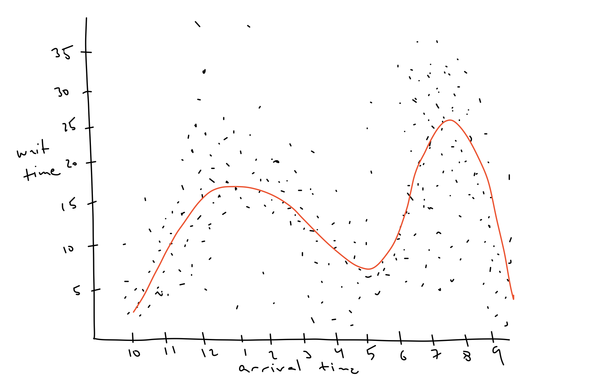
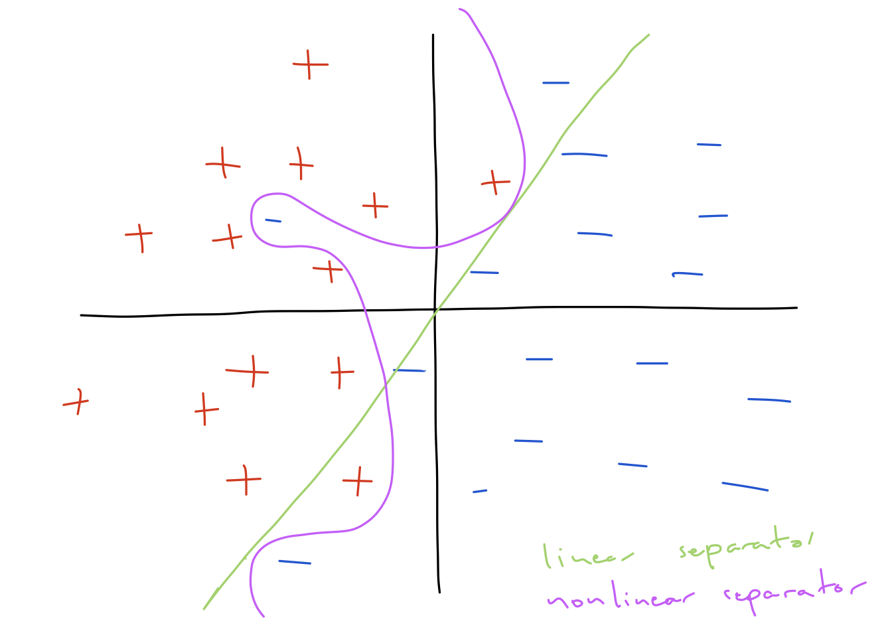
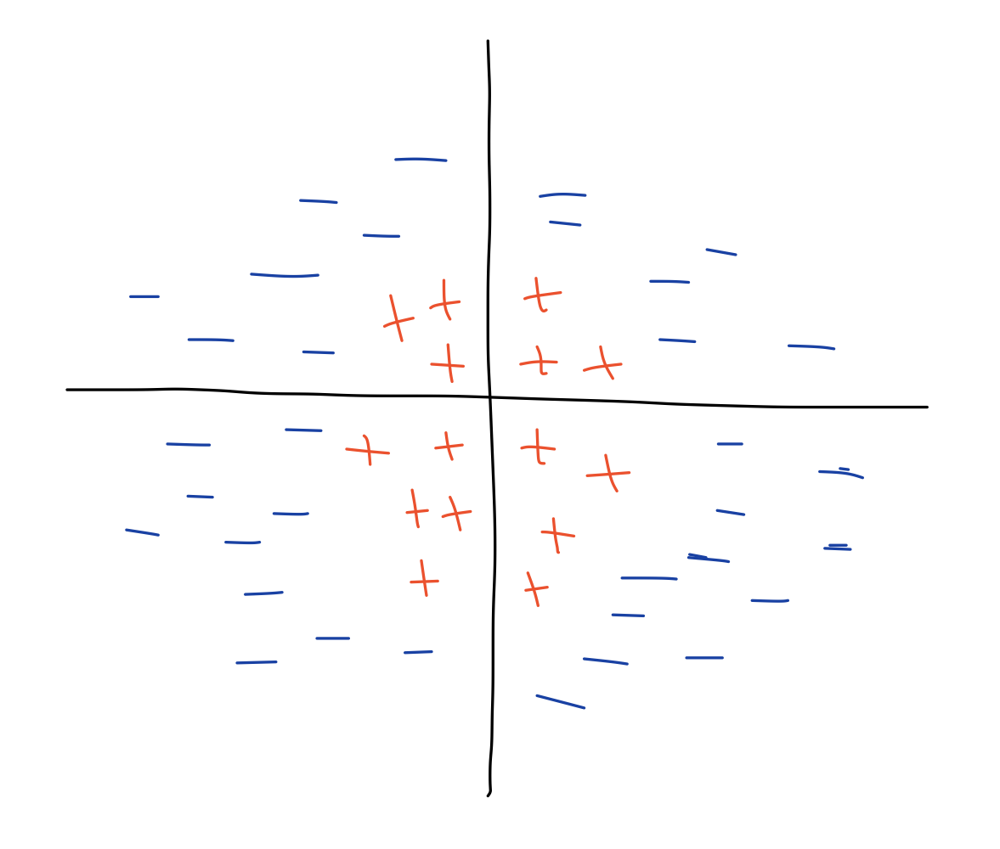
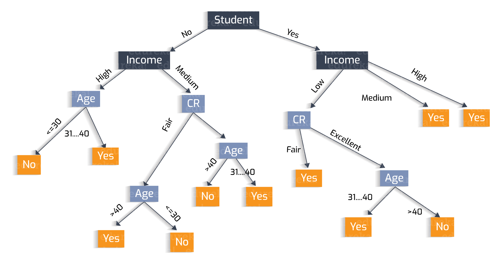
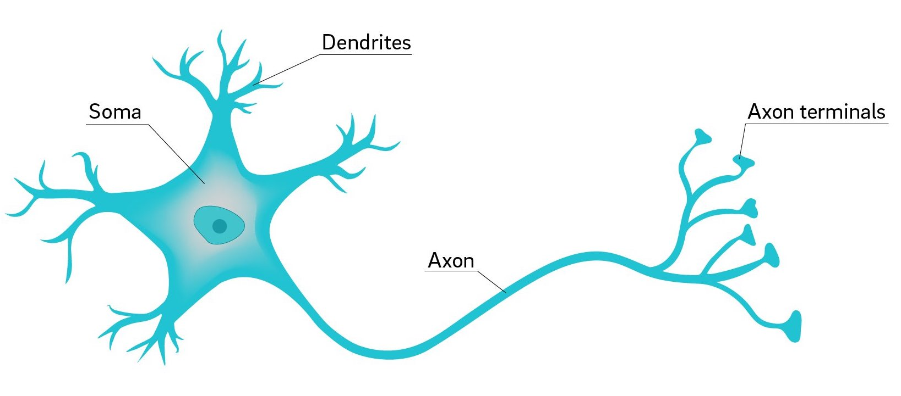
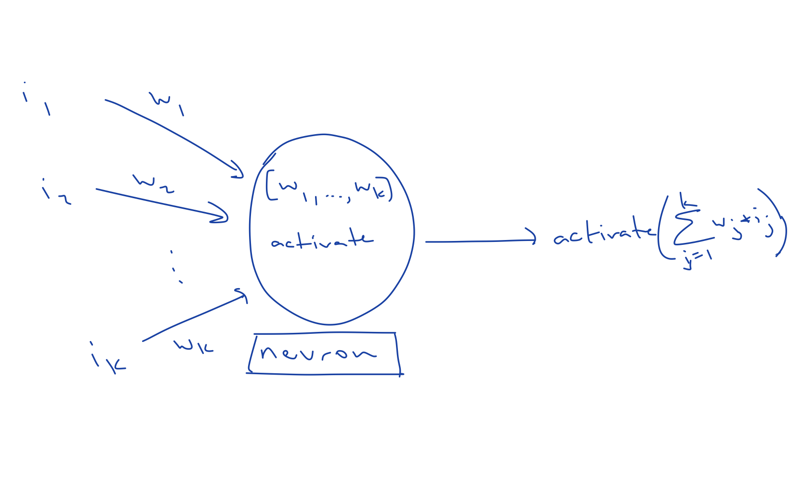
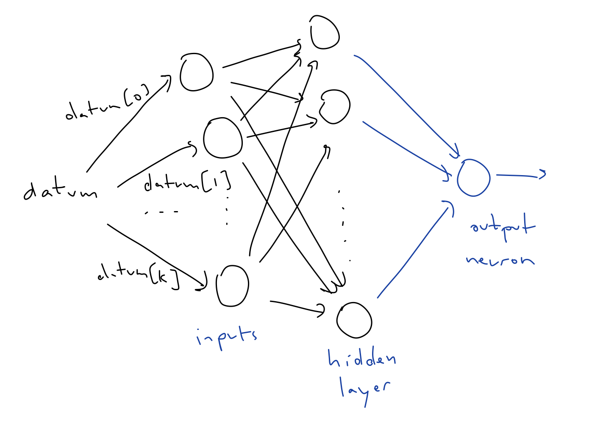

The last two times I taught this course, I offered a couple options for our last topic, and each time machine learning was the most popular option by far. This is not surprising, it's everywhere, and it seems like every employer now expects some familiarity with basic machine learning techniques. I will do my best to provide a sense of what's going on with these basic techniques, but I have to add an important disclaimer: truly understanding machine learning requires some pretty heavy mathematics (e.g., calculus, linear algebra, statistics, even information theory). We can't cover these things, but hopefully we can see enough to make clear what machine learning really is and why it is an interesting problem.
Imagine that you are working for a restaurant and you are tasked with guessing the amount of time that a group will have to wait for a table based on their arrival time. You are not physically at the restaurant, so you can't use real-time data, you are simply given an arrival time and you have to respond with a wait time (you can imagine you trying to put approximate wait times on the website of the restaurant). How would you do this?
One approach is to look at past waiting times and plot them against arrival time. Your graph might look something like this
You can only respond with a single wait time, so you need to produce a line in this graph based on the data. Naturally, you want this line to match the data you have as well as possible, but you quickly realize that it's impossible to match it perfectly. There may be many groups that waited different amounts time in the past, even though they have the same arrival times. And even if you could match the data perfectly, it seems like you wouldn't want to do this anyway.
Your graph would have too much variation, it would capture too much information about the particular data that you have. Instead, you want a line that is somewhat smooth, that averages out some of the behavior of the data.

You try using this line to make your guesses for while, and it works okay, but you tend to underestimate the wait time for large groups and overestimate the wait time for small groups.
To fix this you try to build a different graph for different groups sizes. This works a bit better, but you then realize that your guesses tend to be way off on weekends.
If you were to also create different graphs to also consider what day of the week it is, you would have (maybe 10 groups sizes times 7 days a week) roughly 70 different graphs. The more things you consider the more graphs you need.
Getting to the point, with machine learning we are try to do this automatically. We are trying to guess something, sometimes based on previous experience, using a large amount of data and taking into consideration many features of each datum. But the approaches and the considerations made along the way in both cases.
Machine Learning is becoming ubiquitous, there are the examples we see in the news and Twitter like
but there are also less exotic examples like
In order to understand what is happening in these examples, and what is similar about them, we need to understand what machine learning actually is. All it takes is a quick browse of the Wikipedia page for machine learning to find this nice definition attributed to Tom Mitchell, a machine learning specialist from CMU:
A computer program is said to learn from experience \(E\) with respect to some class of tasks \(T\) and performance measure \(P\) if its performance at tasks in \(T\), as measured by \(P\), improves with experience \(E\).
So if we take
then we have the setup for a machine learning program that solves the problem from the thought experiment above.
This is a very good general definition, but it is, in some sense, too general, we can't do very much with it. We will consider a more specific definition by looking at particular kind of machine learning called supervised classification, for which we take
Breaking down the name "supervised classification," the "classification" part comes from the fact that there is a fixed set of possible classifications or labels for any datum. In the next section, we will focus on binary classification in which there are only two kinds of labels. This is in contrast with regression in which the labels may come from a spectrum of values. The thought experiment above is an example of a regression problem. The "supervised" part comes from the fact that our collection of data comes with the labels. This is in contrast with unsupervised learning, in which the labels are not included or only partially included.
In the set up of supervised binary classification, we are given a data set, and each datum in the set is also assigned a label or classification, of which there are two choices. For example, we can think of the data set as a collection emails represented as .txt files, each labeled as with a Bool, where true means "is spam."
Data are almost always abstractly represented as vectors of Doubles. Vectors come from linear algebra, and are basically arrays with fixed lengths. We will ignore this in these notes and just use arrays, and occasionally use assert statements to enforce length restrictions.
We use Doubles for convenience, as we can encode any different complex data in this way. For example, we can can represent a text file as a a vector of Doubles by mapping each character to a Double and just listing all the character encodings in the order they appear. But to remain somewhat general we can use type aliases.
typealias Datum = [Double]
typealias Classification = Bool
typealias Dataset = [(Datum, Classification)]A classifier is a function of type (Data) -> Classification and the supervised classification problem is to define a function which builds a classifier from a data set.
func buildClassifier(from data: Dataset) -> Classifier {
// TODO
}Ideally, the classifier should do fairly well when classifying data from the dataset. That is, the error rate of the classifier, the fraction of the data that it incorrectly classifies, should be low on the data from which it is built.
func error(of c: Classifier, on data: Dataset) -> Double {
var numberOfErrors = 0
for (datum, label) in data {
numberOfErrors += c(datum) != label ? 1 : 0
}
return Double(numberOfErrors) / Double(data.count)
}But it is not required to be correct on every element of the data set. Like we noted in the thought experiment, this would be too restrictive.
This is a very general statement of the supervised binary classification problem, which I think makes clear our goal, but it is still a bit too general. This is primarily because classifiers are very unrestricted objects, there are so many Swift functions that are considered classifiers. So what is usually done in machine learning is we build a model of the data, which is a classifier that usually comes from a particular (usually simple) collection of classifiers. We can represent a model as a structure with
.classify(:_) of type (Dataum) -> Classification, and.train(_:) of type (Dataset) -> VoidWe can then define the classifer building function as
func buildClassifier(from data: Dataset) -> (Datum) -> Classifiction {
var m = model() // or another reasonable initializer
m.train()
return { datum in m.classify(datum) }
}The problem of training models is the hard part of machine learning. The more complicated the class of models, the harder they are to train. We can't reasonably look at training in these notes, so instead we'll just look at a couple basic models and how they are use for classification.
In two dimensions, we can think of the data set in the binary classification problem as being a collection of points in the plane, each labeled either + or -

The goal of binary classification is then to find a line that separates the +'s from the -'s. And if you're lucky, this can be done with a straight line. A linear separator is a line (or in higher dimensions, a so-called hyperplane) which classifies points based what side of the line they fall. In two dimensions, a line is determined by two coefficients, \(a\), \(b\), and an threshold \(c\), which describe the line \(ax + by = c\). To determine the point \((x, y)\) appears above the line, we simply have to check if \(ax + by > c\) and for below, we check \(ax + by < c\). In more dimensions, we simply need more coefficients. A plane in three dimensions given by \(ax + by + cz = d\),
One quick trick, keeping track of the threshold can be a bit annoying, so what is typically done is we just add a 1 to all our data.
data = data.map({ (datum, label) in (datum + [1], label) })Determining the separator \(ax + by + c(1) = 0\) of points of this form in three dimensions is equivalent to finding a separator \(ax + by = -c\) is two dimensions. The take away is that we can always assume the threshold is \(0\).
In the general case, an \((n - 1)\)-dimensional plane in \(n\) dimensions is determined by a collection of coefficients \(a_1, \dots, a_n\) and is given by
\[ \sum_{i = 1}^n a_i x_i = 0 \]
Determining if a point is on one side or the other is, again, simply replacing the '\(=\)' with '\(<\)' or '\(>\)'. This operation of taking the sum of the products of elements is very common, it is called a dot product in linear algebra, and is worth adding to Array as an extension.
extension Array where Element == Double {
func dot(_ l: [Element]) -> Double {
assert(count == l.count)
var accum = 0.0
for i in 0..<count {
accum += self[i] * l[i]
}
return accum
}
}We can then define the linear separator model as the following structure with a classifying method that determines on which side of the plane specified by the coefficients the datum appears on.
struct LinearSeparator {
var coefficients: [Double]
func classify(_ datum: Datum) -> Classification {
return coefficients.dot(datum) > 0
}
}The primary benefit of linear separators is that they are very simple and so easier to train than other models. But this simplicity comes at a price, it cannot separate some data with very obvious but nonlinear separators.

This is a typical tradeoff in machine learning. Simple models are easier to train but less powerful.
Decision Trees are the fancy machine-learning representations of the game 20 questions. A decision tree a tree-like enumeration where the leaves of the tree (then ends without recursive data) contain classifications, while the nodes have questions in the forms of functions which choose which branch to take.

Classifying using a decision tree is done by traversing down the tree using the functions at each node on the input datum to guide the path until a leaf with the output classification is reached.
indirect enum DecisionTree {
case leaf(Classification)
case node((Datum) -> Int, [DecisionTree])
func classify(_ datum: Datum) -> Classification {
switch self {
case .leaf(let classification):
return classification
case .node(let childChooser, let children):
return children[childChooser(datum)].classify(datum)
}
}
}Training a decision tree is about determining the functions to place at each node. Usually these are also restricted to be of a particular form to make training easier.
This last model is the most complicated and the most powerful. Neural networks are inspired by neurons in the brain. I know nothing about neuroscience, but as it has been described to me, neurons in the the brain send electrical signals across a long section called the axon, but only do so if the receive a strong enough combined signal from the neurons connected to the head of the axon via the dendrites.

Neural networks in machine learning are made of up collections of structures called usually called Neurons. Every Neuron in the network has a collection of inputs, which come from the data or from other Neurons. This is supposed to simulate the connections of neurons in the brain. The inputs feed values into the Neuron and the Neuron takes the dot product of these inputs with a collection of coefficient or weights which the Neuron stores internally. The output of a Neuron is then this value with an function \(\mathsf{activation}\) applied, i.e.,
\[ \mathsf{output} = \mathsf{activation}\left( \sum_{i = 1}^k \mathsf{weight}_i * \mathsf{input}_i\right) \]
The activation function is usually a threshold function
\[ \mathsf{threshold}(x) = \begin{cases} 1 & x > 0 \\ 0 & x \leq 0 \end{cases} \]
which mimics the head of the axon receiving sufficient charge to fire.

Neurons can be arranged in any number of ways, but we will be looking at a particular simple kind of network called the single-layered neural networks. This is comprised of a single hidden layer of nodes which take in input values from the data and a single output nueron which is fed the outputs of the hidden layer.

To classify using a neural network we feed each input to every node in the hidden layer, determine the outputs, and then feed all these outputs input the ouput neuron, and determine its output. Finally we return true if this value is greater than \(0\) and false otherwise, to get a binary classification.
struct SingleLayerNeuralNetwork {
struct Neuron {
var inputWeights: [Double]
var activation: (Double) -> Double
func output(_ inputs: [Double]) -> Double {
return activation(inputWeights.dot(inputs))
}
}
var hiddenLayer : [Neuron]
var outputNeuron: Neuron
func classify(_ datum: Datum) -> Classification {
let outputsOfHiddenLayer = hiddenLayer.map({ $0.output(datum) })
return outputNeuron.output(outputsOfHiddenLayer) > 0
}
}Training a neural network is about figuring out what input weights to use and what activation function to use. This is pretty complicated, but there are some methods that work very well and very fast. Part of the reason you've probably heard of neural networks before today is because they are used everywhere. They work extremely well in practice, but is is still a wide open question of why this is the case.
Machine learning is a popular enough fields that there are a ton of prebuilt algorithms for training the models above. If you are just interested in using machine learning, you could get pretty far without knowing how any of these work. In fact, there are machine learning programs for determining which machine learning models you should use in different cases! In the meeting, we will see how easy it is to set up and test models in a different language called Python.
This begs the question: why understand the technical details at all? This is a fair question. Here are a couple possible answers.